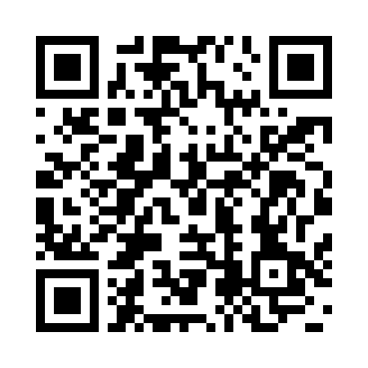

Bem-vindo ao Recanto
É um prazer receber você.
Preparamos este guia com algumas informações importantes para que você aproveite sua estadia com mais conforto, tranquilidade e segurança.
Como chegar
Caso ainda não tenha conferido o trajeto até o Recanto, programe sua rota antes de sair.
Abrir trajeto no Google Maps →Wi-Fi
Durante sua estadia, você pode utilizar gratuitamente a rede Wi-Fi do Recanto.

TV e streaming
A TV do Recanto já possui acesso à Netflix, Prime Video e Globoplay.
Fogão a lenha e fogueiras
O fogão a lenha está disponível para uso durante a sua estadia. Também é possível fazer fogueiras nas áreas apropriadas do Recanto.
Ao utilizar fogo, mantenha sempre uma pessoa responsável por perto e certifique-se de que esteja completamente apagado após o uso.
Piscina, lago e Rio Juquiá
O contato com a água faz parte da experiência do Recanto, mas esses espaços exigem atenção.
Adultos também devem utilizar essas áreas com cuidado, especialmente o rio e o lago, que são ambientes naturais e podem apresentar variações de profundidade, correnteza e condições do terreno.
Cuide de você e de quem está com você. Aproveite com segurança.
Natureza e animais
Você está em uma propriedade rural, cercada por natureza e com animais que fazem parte do dia a dia do Recanto.
Ao caminhar pela propriedade, principalmente em áreas de mata, trilhas ou terrenos menos utilizados, tenha atenção ao caminho e às condições naturais do local.
Refeições
Quer aproveitar o Recanto sem se preocupar com a cozinha?
Se tiver interesse, consulte a disponibilidade antes da sua estadia.
Antes de ir embora
Esperamos que você tenha aproveitado cada momento no Recanto. Antes de partir, pedimos apenas alguns cuidados.
Boa viagem de volta. Esperamos receber você novamente em breve.
Precisa de ajuda?
Durante sua estadia, estaremos por perto para ajudar sempre que necessário.
Se tiver alguma dúvida ou precisar de alguma coisa, fale conosco pelo WhatsApp.
Falar com os anfitriões →